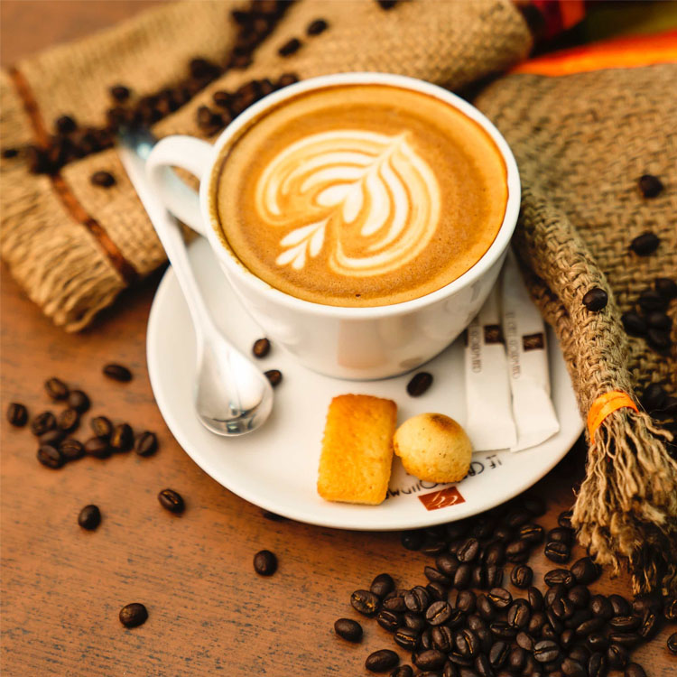
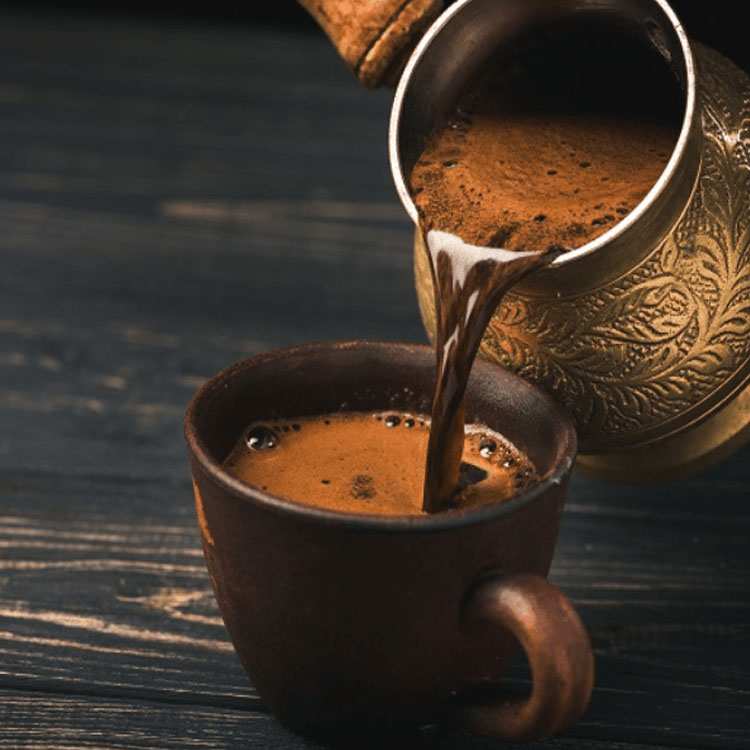
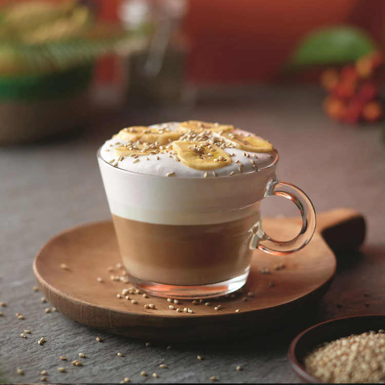
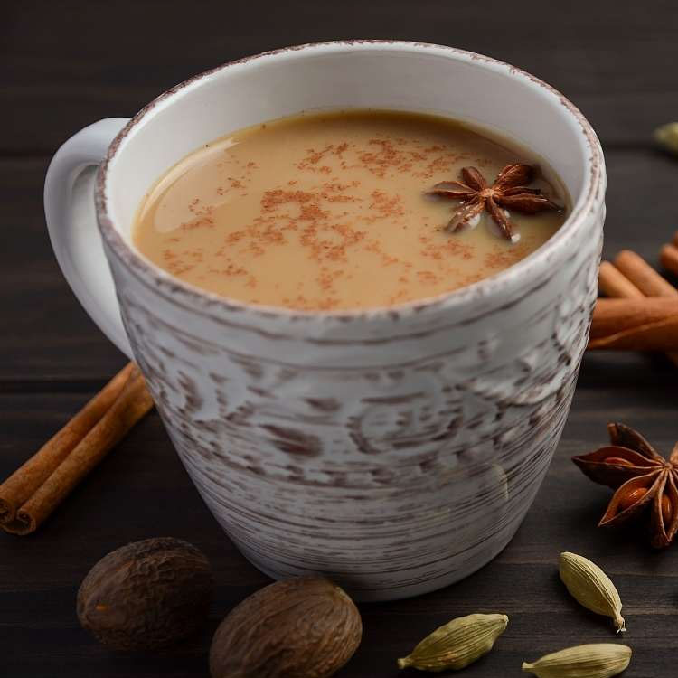

Faça uma pausa! Conheça nossos cafés especiais e aproveite um momento mais relaxante
Sempre houve em nós o desejo de fazer a diferença no mundo, e encontramos a produção de copos de papel, teoricamente uma coisa simples, uma oportunidade de realizar nosso sonho. O Brasil é um país conhecido por ser “abençoado por Deus e bonito por natureza” e realmente é, no entanto, acreditamos que para manter este estado, o homem precisa mudar a maneira de pensar e agir. Acreditamos também que tudo está em evolução, inclusive o homem, e que um homem melhor, com a consciência ampliada, sabe que sempre há um jeito melhor de agir e que bons exemplos devem ser seguidos. Aproximadamente 3 anos atrás reconhecemos uma boa ideia que ainda estava pouco difundida no Brasil e desde então começamos a trabalhar para implantar uma cafeteria sustentável. Queremos através da StarBuzz mostrar o exemplo de que é possível fazer o que sempre fizemos, porém de um jeito diferente e muito melhor. Queremos ser a melhor cafeteria para o mundo, e não do mundo.
 |
 |
 |
 |
Mistura da Casa: |
Café arábico com leite: |
Cappuccino: |
Chá Chai: |